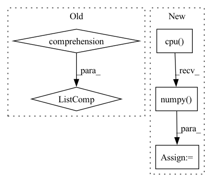

Pattern ID :17014
Before Change
self.evict_backlist.clear()
// new ids chunk_offset + offset_in_chunk
with record_function("(zhg) embed idx -> cache chunk id"):
mapped_ids = torch.tensor([self._id_to_cached_cuda_id(id) for id in ids.view(-1)] ,
device=ids.device,
dtype=ids.dtype).view(ids.shape)
After Change
// self.IMT_Embedding(ids)
chunk_id_set = torch.unique(self.IMP_chunkid_Embedding(ids))
chunk_id_set = set(chunk_id_set.cpu().numpy() )
assert len(chunk_id_set) <= self.cuda_chunk_num, \
f"the input indices pull {len(chunk_id_set)} chunks, " \In pattern: SUPERPATTERN
Frequency: 5
Non-data size: 5
Instances Fragment ID: 57151961
Project Name: hpcaitech/freqcacheembedding
Commit Name: 5062f1cff105e81702e90439e652d412e4950718
Time: 2022-07-25
Author: fangjiarui123@gmail.com
File Name: recsys/modules/embeddings/chunk_param_mgr.py
M Class Name: ChunkParamMgr
N Class Name: ChunkParamMgr
M Method Name: prepare_ids(2)
N Method Name: prepare_ids(2)
M Parent Class: object
N Parent Class: object
M File Name: recsys/modules/embeddings/chunk_param_mgr.py
N File Name: recsys/modules/embeddings/chunk_param_mgr.py
M Start Line: 126
M End Line: 165
N Start Line: 152
N End Line: 189
Before Change
X = X.to(self.device)
y = y.to(self.device).int()
pred = self.model(X)
[fn(pred, y) for fn in self.metric_fns]
result = {type(fn).__name__: fn.compute().item() for fn in self.metric_fns}
[fn.reset() for fn in self.metric_fns]
return result
After Change
elif get_package_name(fn) == "sklearn":
if type(fn).__name__ not in sklearn_intermediates:
sklearn_intermediates[fn.__name__] = 0
sklearn_intermediates[fn.__name__] += fn(
y.cpu().data.numpy(), pred.cpu().data.numpy() )
// torchmetrics compute and reset
for fn in self.metric_fns:
if get_package_name(fn) == "torchmetrics": Fragment ID: 57151963
Project Name: ryantd/veloce
Commit Name: aca7bbb15fbcbae885dd418e7ff969ad4828703e
Time: 2022-01-04
Author: xiaoyu.zhai@hotmail.com
File Name: phetware/epochvisor.py
M Class Name: Epochvisor
N Class Name: Epochvisor
M Method Name: test_epoch(2)
N Method Name: test_epoch(2)
M Parent Class: object
N Parent Class: object
M File Name: phetware/epochvisor.py
N File Name: phetware/epochvisor.py
M Start Line: 126
M End Line: 133
N Start Line: 128
N End Line: 154
Before Change
param.data += delta_weight[idx]
idx += 1
model_param = [param.data.cpu().numpy() for param in model.state_dict().values()]
results = {"clientId":clientId, "moving_loss": epoch_train_loss,
"trained_size": completed_steps*conf.batch_size, "success": completed_steps > 0}
results["utility"] = math.sqrt(epoch_train_loss)*float(trained_unique_samples)After Change
idx += 1
state_dicts = model.state_dict()
model_param = {p:state_dicts[p].data.cpu().numpy() for p in state_dicts}
results = {"clientId":clientId, "moving_loss": epoch_train_loss,
"trained_size": completed_steps*conf.batch_size, "success": completed_steps > 0} Fragment ID: 57151952
Project Name: symbioticlab/fedscale
Commit Name: c83c2512483023b4557d124888aec637a04fa978
Time: 2022-05-26
Author: fanlai0@outlook.com
File Name: examples/poisoning_setting/customized_client.py
M Class Name: Customized_Client
N Class Name: Customized_Client
M Method Name: train(4)
N Method Name: train(4)
M Parent Class: Client
N Parent Class: Client
M File Name: examples/poisoning_setting/customized_client.py
N File Name: examples/poisoning_setting/customized_client.py
M Start Line: 95
M End Line: 95
N Start Line: 95
N End Line: 96
Before Change
def _variable_to_array(var, to_cpu=True):
if isinstance(var, (tuple, list)):
array = [v.data if isinstance(v, chainer.Variable) else v for v in var]
if to_cpu:
array = [cuda.to_cpu(v) for v in array]
return tuple(array)After Change
array = {}
for key, v in var.items():
if to_numpy:
v = v.detach().cpu().numpy()
array[key] = v
return array
else: Fragment ID: 57151955
Project Name: yuta-hi/pytorch_bayesian_unet
Commit Name: e996e0983c760a01ed617e1f3cfcbdaa8b41b242
Time: 2020-03-30
Author: hiasa.yuta.ht7@is.naist.jp
File Name: pytorch_bcnn/inference/inferencer.py
M Class Name: AnonimousClass
N Class Name: AnonimousClass
M Method Name: _variable_to_array(2)
N Method Name: _variable_to_array(2)
M Parent Class:
N Parent Class:
M File Name: pytorch_bcnn/inference/inferencer.py
N File Name: pytorch_bcnn/inference/inferencer.py
M Start Line: 72
M End Line: 92
N Start Line: 72
N End Line: 91